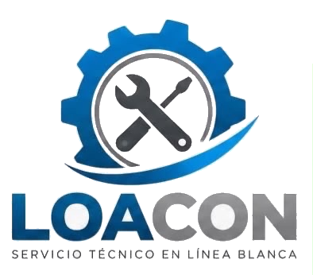
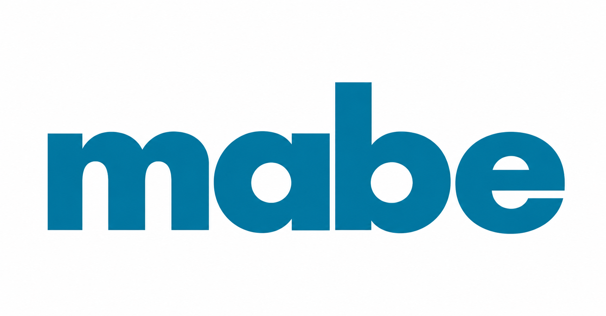
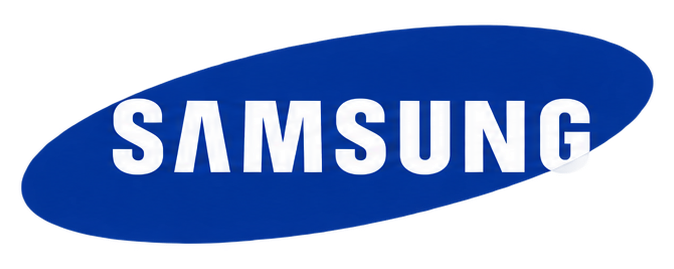
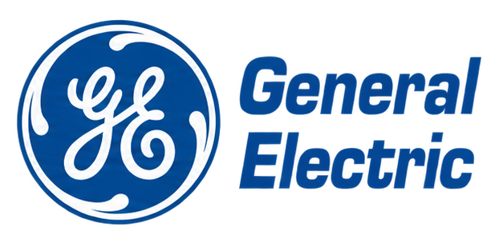

Mantenimiento, reparación e instalación de electrodomésticos a domicilio.



Mantenimiento, diagnóstico y reparación para que tus equipos vuelvan a funcionar correctamente.
Nos enfocamos en ofrecer un servicio técnico profesional, claro y confiable para el cuidado de tus equipos.
Atención especializada para diferentes equipos de línea blanca.
Vamos hasta donde se encuentre tu equipo.
Revisamos el equipo para identificar correctamente la falla.
Buscamos ofrecer soluciones eficientes y duraderas.